2023/10/08 午前と午後の２回開催
第58,59回 ニンジャ23名参加。初めて入門プログラミング＆ラズパイ編
午前は初めて参加の入門コースとScratch共通テーマの「♪作曲家になろう」をみんなで制作。午後はラズパイの移動タンクを改造編、そして漆畑メンターの作品が大人気。
本日の青梅Dojo出欠確認です
ニンジャの申し込みは午前17名・午後6名の延べ23名。保護者家族13名、メンター6名、見学2名のなんと延べ44名が参加してくれました。
２つの会議室を連結している広さですが、ほぼ満席です。
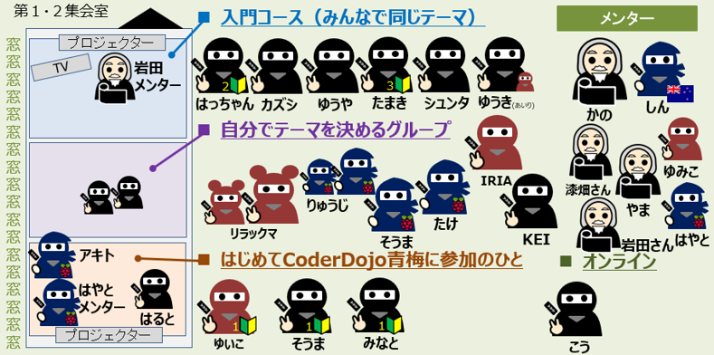
最初は全員でオリエン。今日のテーマと参加者を紹介します。
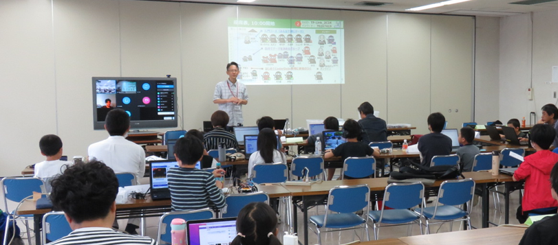
オンラインも同時開催。遠方から参加してScratchとかMicro:bitとか、ラズパイ の話を聞いています。
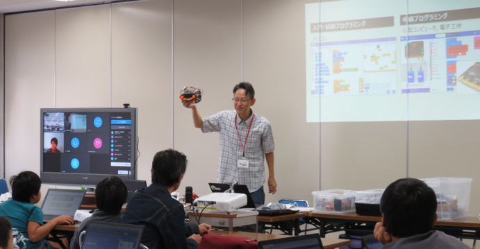
午前ワークショップ（Scratchプログラミング入門・初級）
午前はレベル別に４ブロックに分かれてワークショップを行います。
１．はじめて参加するニンジャ向け入門プログラミング
中学生ユースメンターのはやと君が先生。入門コースの大々ベテラン講師です。教えるツールもパワーアップ。今日も３人の新人ニンジャに「くものアスレチック」を伝授してくれました。
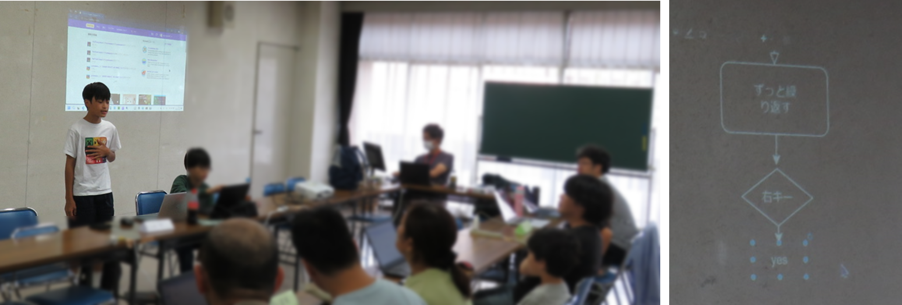
２．みんなで同じテーマはScratch音楽編「♪作曲家になろう」でした
今月は岩田メンターによる音楽編「♪作曲家になろう」の制作にチャレンジ。音符を自由に配置して、横に移動するラインに音符が触れると音符自身が自分の音程を鳴らします。２つ以上の音符が同時に鳴ることも出来るので多重和音が鳴るのがポイントです。
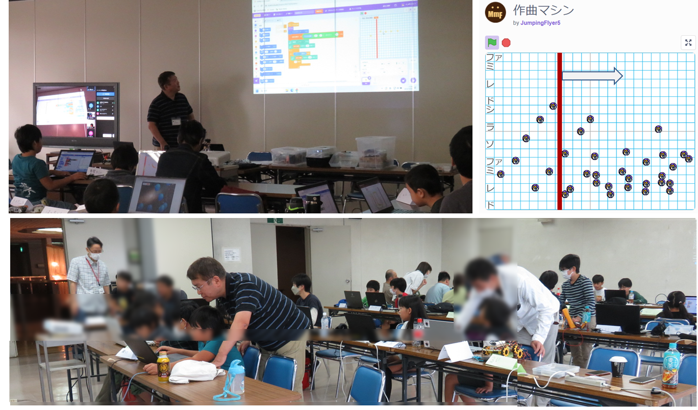
３．自分でテーマを決めてがんばる初中級プログラミング
前後移動はもちろん、真横にも移動できるメカナムホイールの micro:bit リモコン・カーの開発も最終段階のニンジャ。Scratchも好きなテーマでそれぞれのニンジャが作品づくりしています。
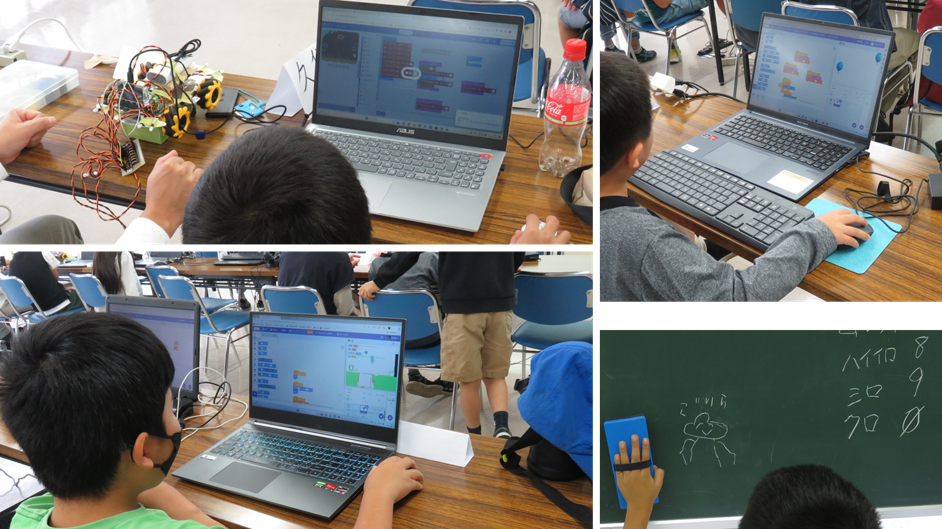
４．オンライン同時開催。
オンラインでも しん メンターが支援して会場と一体の「♪作曲家になろう」に挑戦。ニンジャが曲「🐸カエルの合唱」を発表してくれました。
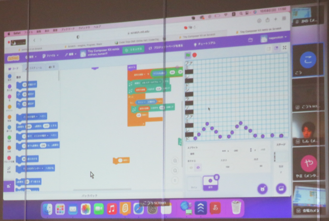
残り30分はみんなの成果発表会
初めて参加のニンジャも中級ニンジャも今日つくった作品を発表します。すごくアートな作品やキラキラ色の変わる恐竜、輪唱する猫、即興スマブラなど、プログラムの作り方や仕組みを聞くなどすごく楽しい発表になりました。
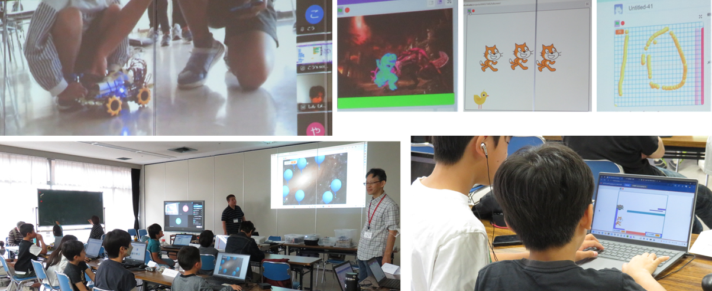
午後ワークショップ（ラズパイと電子工作）
12月の「🏆CoderDojo青梅カップ2023」を目指してラストスパート。さまざまな部品を駆使してカメラ配置・サーボモーター配置、モーターの交換など一生懸命とりくんでいました。
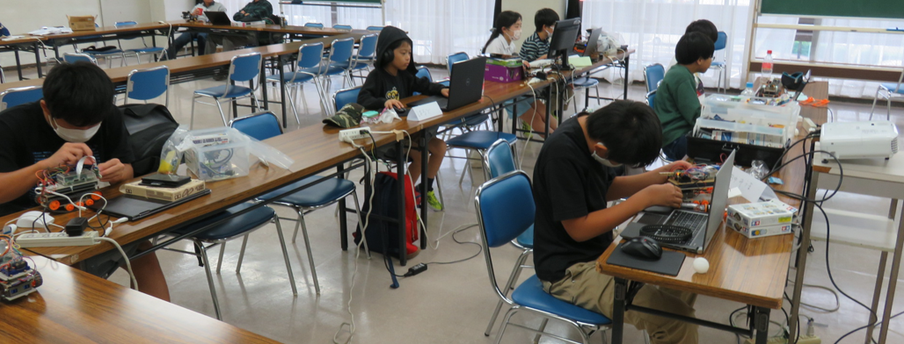
カラートラッキングの実践
残り15分は漆畑メンターによるOpenCVでカメラ画像の赤色を検出して赤色の方向へ自動走行するカラートラッキングの走行実践デモを披露してくださいました。これは楽しい。子どもたちがラズタンクの後方に赤色テープを貼り付け、カラートラッキングから逃げる逃走中で遊んでいました。
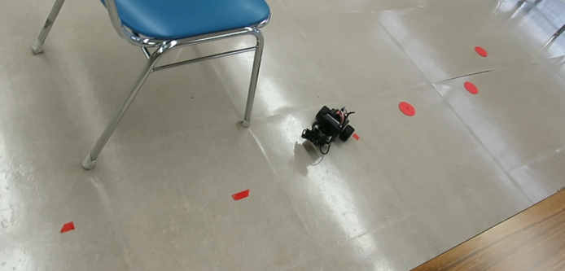
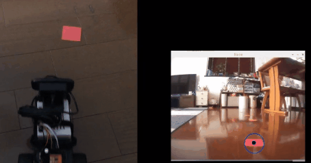
次回は11月26日(日)開催です。
Connpassでイベント告知するので、またの参加をお待ちしています。参加申し込みはこちらのConnpassから
 CoderDojo青梅にご質問メールはこちら
CoderDojo青梅にご質問メールはこちら
😃